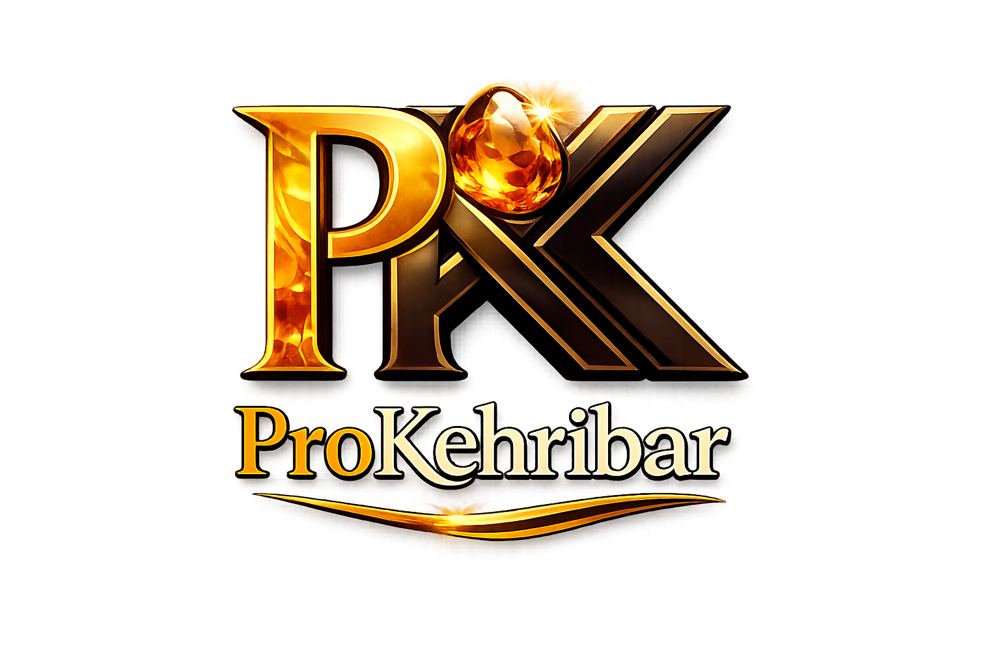

İstanbul'da sertifikalı, orijinal Ukrayna kehribar taşları ve el işçiliği özel tasarım erkek tespih modelleri.
Modelleri WhatsApp'tan İnceleUkrayna damla kehribarı, kendine has sıcak renk tonları, yüksek kalitesi ve işleme esnasında ortaya çıkan benzersiz doğal dokusuyla dünya çapında koleksiyonerlerin ve tespih ustalarının ilk tercihidir.
Mağazamızda bulunan tüm ürünler %100 orijinal Ukrayna kaya kehribarlarından özenle seçilerek üretilmektedir. Sahte veya preslenmiş taşlara kesinlikle yer verilmemektedir.
Ürün detayları ve güncel stok bilgisi için WhatsApp üzerinden bizimle iletişime geçebilirsiniz.
Ukrayna’nın en özel damla kehribar bloklarından, usta ellerde titizlikle şekillendirilen benzersiz bir eser. Kusursuz kapsül (fıçı) kesimi ve kadifemsi dokusu ile hem elinize hem ruhunuza hitap eder. Özel kesimi ve el işçiliği kalitesiyle koleksiyonunuzun en değerli parçası olmaya aday.
Bilgi AlGünlük çekime mükemmel uyum sağlayan, elinizden düşürmek istemeyeceğiniz özel bir doku. Zamanla renk alma (renk değiştirme) garantili bu kapsül kesim tespih, çektikçe parlayacak ve size özel bir karaktere bürünecektir. Hem günlük kullanım hem de koleksiyon için ideal bir şaheser.
Bilgi AlGeleneksel zarafetle lüksün buluşması. Her bir tanesi özenle kalibre edilmiş, kusursuz zeytin kesim hatlara sahip bu model, özel el yapımı sistemli (püsküllü) tasarımıyla öne çıkıyor. Hakiki kehribarın asaletini ve çekim akıcılığını en üst seviyede hissettiren, prestij sahibi bir model.
Bilgi AlDoğal yapısı tamamen korunmuş, işlenmeye hazır yüksek kalite kaya kehribar. Özellikle butik tespih yapımı, takı tasarımı ve hassas el işçilikleri için ideal boyuttaki bu parçalar, yüksek verimliliği ve zengin renk potansiyeli ile ustaların ilk tercihidir.
Stok SorKoleksiyonerler ve elit ustalar için özel olarak seçilmiş, iri boy doğal damla kehribar taşı. Göz alıcı dolgunluğu, pürüzsüz dış kabuğu ve premium kalitesiyle tek parça koleksiyonluk objeler veya tek bloktan çıkma özel tespihler üretmek için mükemmel bir ham maddedir.
Stok SorMilyonlarca yıllık tarihi içinde barındıran, müze kalitesinde devasa bir parça. İçindeki benzersiz doğal oluşumlar ve organik fosil kalıntıları ile adeta bir zaman kapsülü niteliğindedir. Hem nadir bir yatırım aracı hem de en üst düzey koleksiyonlar için eşsiz bir doğa harikası.
Stok SorOrijinal taşlardan tasarlanmış, şık ve enerjisi yüksek bileklik.
Modeli SorDoğallığı ön plana çıkaran, özel dizim lüks kehribar kolye.
Modeli SorTamamen el yapımı, eşsiz renk geçişlerine sahip özel aksesuar.
Modeli SorSadece gerçek Ukrayna damla kehribarı satıyoruz.
İstanbul merkezli tüm Türkiye'ye hızlı kargo imkanı.
Hem tekli alımlarda hem de toplu ticarette en iyi fiyat garantisi.